The work done by a force \(\boldsymbol{F}\) is \[ U = \int\boldsymbol{F} \cdot d\boldsymbol{r} \hspace{1.5em} \mathrm{or} \hspace{1.5em} U = \int (F \cos \alpha) ds \]
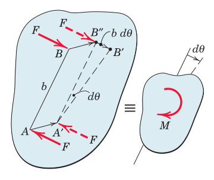
The work done by a couple produces \(dU = F (b\,d\theta) = M\,d\theta\) due to the rotational part of the motion, which gives \[ U = \int M\, d\theta \] in a finite rotation.
For rigid bodies in
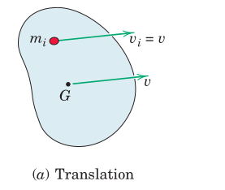
From the particle \(T_i = \frac{1}{2} m_i v^2\) to the entire body \(T = \lim \sum \frac{1}{2} m_i v^2 = \frac{1}{2} \int_B v^2 dm\) giving \[ T = \frac{1}{2} mv^2 \]
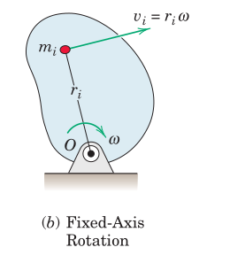
For the particle rotating with angular speed \(\omega\) about point \(O\), \(T_i = \frac{1}{2} m_i (r_i\omega)^2\) extending to the entire body as \(T = \frac{1}{2} \omega^2 \lim \sum m_i r_i^2 = \frac{1}{2} \omega^2 \int_B r^2 dm\) where \(\int_B r^2 dm \equiv I^O\) so that \[ T = \frac{1}{2} I^O \omega^2 \]
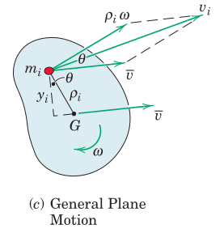
The velocity \(v_i\) of \(m_i\) may be expressed in terms of the velocity of the mass center \(\bar{v}\) and the velocity \(\rho_i\omega\) relative to the mass center. With the aid of the cosine rule for adding vector components the kinetic energy for the particle can be written as \[ T = \lim \sum \frac{1}{2} m_i (\bar{v}^2 + \rho_i^2 \omega^2 + 2 \bar{v} \rho_i \omega \cos \theta) \]
Factoring out \(\bar{v}\) and \(\omega\) out of the summation the last term becomes \[ \omega \bar{v} \lim \sum m_i \rho_i \cos \theta = \omega \bar{v} \int_B y\, dm = 0 \] due to the integral being taken about the center of mass and the kinetic energy is obtained as \[T = \frac{1}{2} m \bar{v} + \frac{1}{2} \bar{I} \omega^2 \]
Kinetic energy of a rigid body in plane motion can also be conveniently expressed about the instantaneous center \(C\) of velocity as \[ T = \frac{1}{2} I^C \omega^2 \]
The work-energy relation was introduced as \[ T_1 + U_{1-2} = T_2 \] applies to any mechanical system including rigid bodies.
If the effect of gravity and springs are expressed by means of potential energy rather than work, then the above equation may be rewritten as \[ T_1 + V_1 + U'_{1-2} = T_2 + V_2 \] where \(U'\) denotes the work by all active forces other than gravity and spring forces.
A free-body diagram or an active-force diagram should be used in either case.
The work-energy method is most useful for analyzing conservative force systems that do not involve dissipative forces such as friction.
For a force \(\boldsymbol{F}\) acting on a rigid body in plane motion, the power developed by that force at a given instant is calculated as the rate at which the force is doing work \[ P = \frac{dU}{dt} = \frac{\boldsymbol{F} \cdot d\boldsymbol{r}}{dt} = \boldsymbol{F} \cdot \boldsymbol{v} \]
Similarly, for a couple \(M\) acting on the body, the power developed by the couple at a given instant is the rate at which it is doing work \[ P = \frac{dU}{dt} = \frac{M\,d\theta}{dt} = M\omega\]
If the force and couple act simultaneously, the total instantaneous power is \[ P = \boldsymbol{F} \cdot \boldsymbol{v} + M\omega \]
For an infinitesimal displacement the work-energy expression becomes \[ dU' = dT + dV \]
Dividing by dt the total power of active forces and couples are \[ P = \frac{dU'}{dt} = \dot{T} + \dot{V} = \frac{d}{dt} (T+V) \]
Note that the first term may be written as
where \(\boldsymbol{R}\) is the resultant of all forces acting on the body and \(\bar{M}\) is the resultant moment about the mass center \(G\) of all forces.
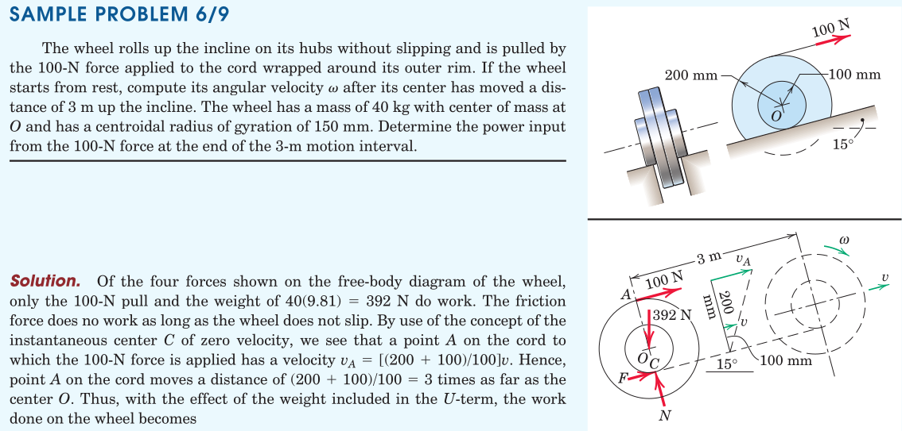
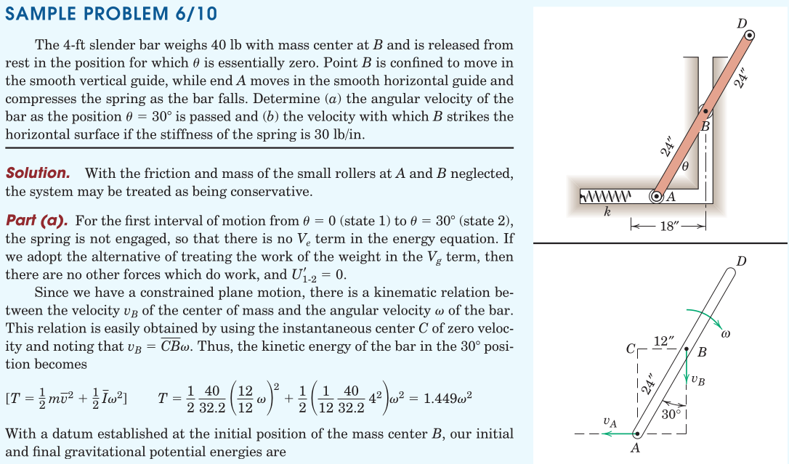
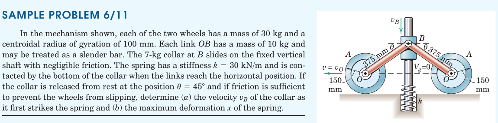
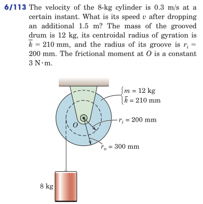
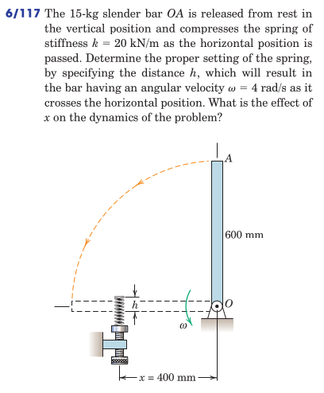
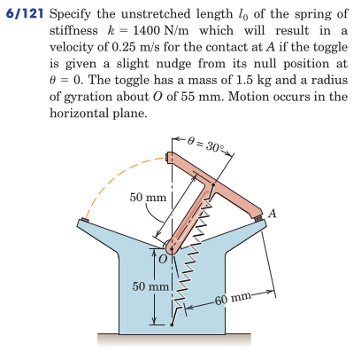
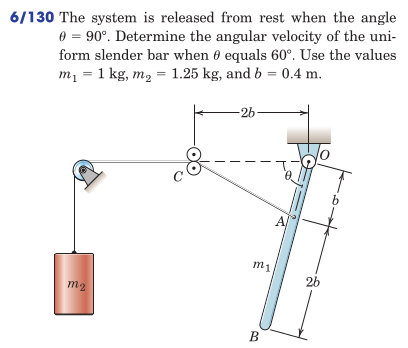
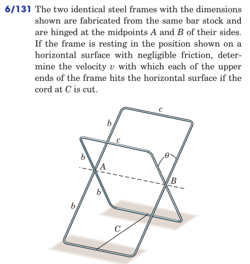
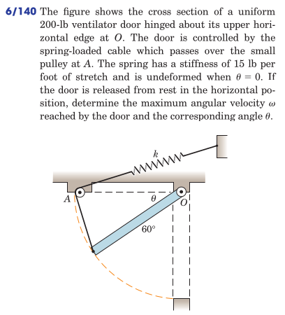